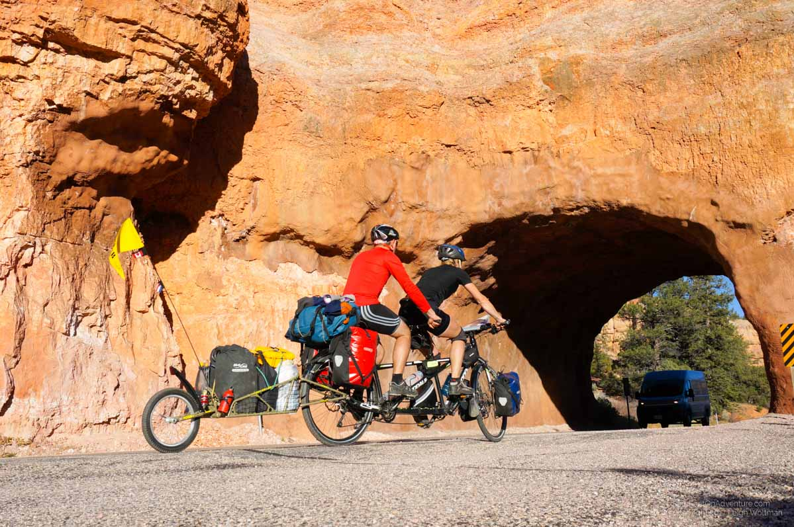
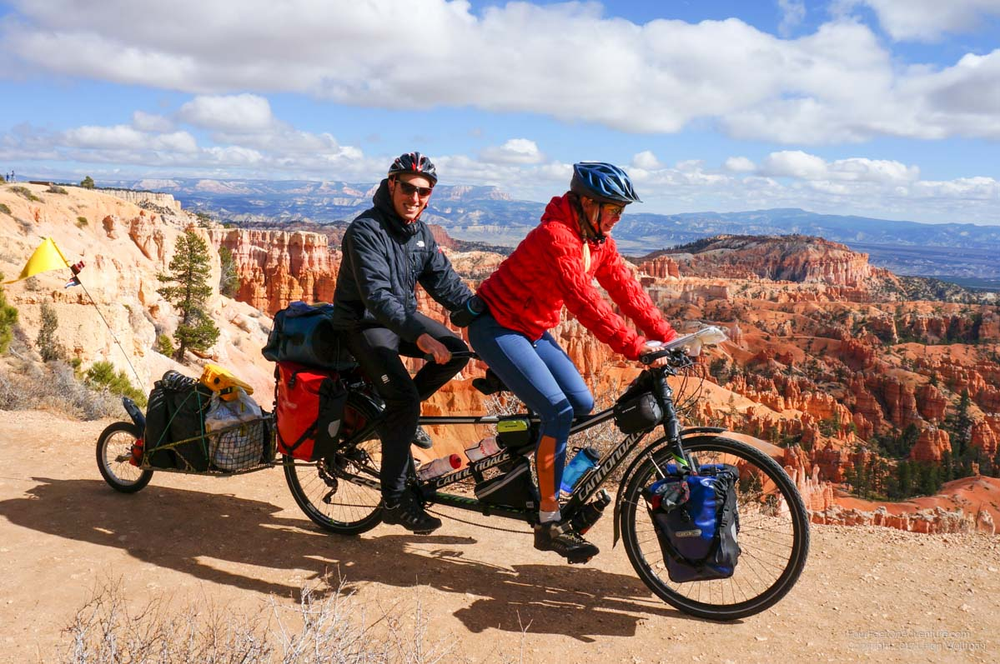
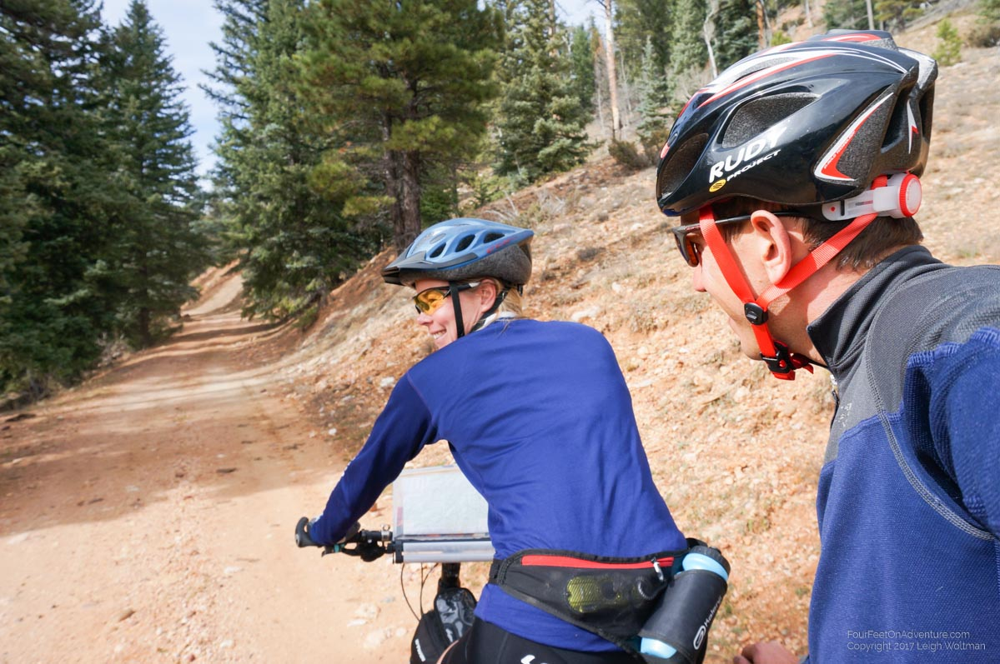
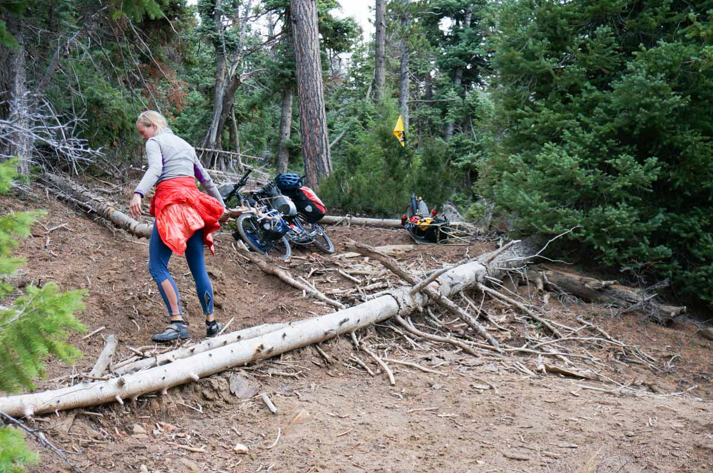
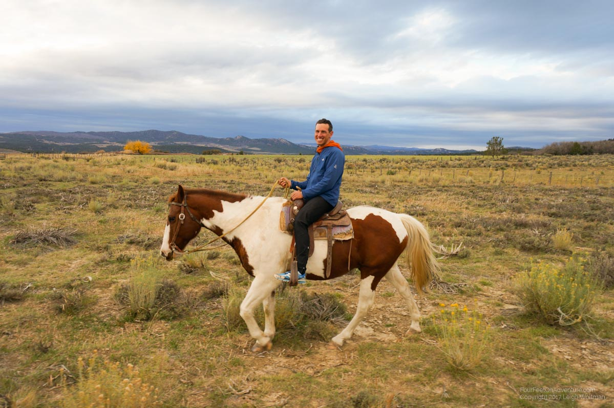
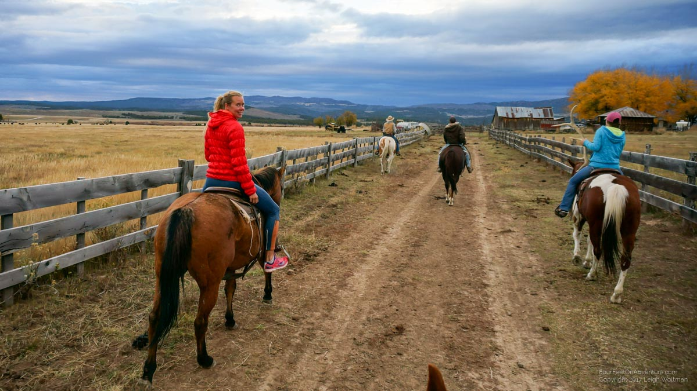

Email Us
Please send us an email, we would love to hear from you!

We are currently in a small roadside campground before the turnoff for the highway to Zion NP. We were both really tired last night and for US prices it is relatively cheap ... $20 per night. This morning we decided to take a rest day here and then tomorrow hopefully push all the way to Zion.
So, after Panguitch, we cycled to Bryce Canyon. Along the way there was Red Canyon which we stopped at.

From Red Canyon to Bryce there was actually 20 km of paved bike path so it was nice not to be on the highway. The next day we went and hiked the canyon, I was pretty tired but the canyon is amazing. By good luck, that day was the last day they were running shuttle buses that do a loop every 20 minutes so you can get on a bus and move to the next spot. A very good setup if you don't have a car. We used the shuttle to take a tour all the way around the park.

We stayed two nights in a private campground with showers and then for the third night decided to take a little cabin in the campground as it was supposed to rain. The next day I was quite fatigued so we stayed in the cabin another day. During those two days Annette biked into the park and went for hikes during the day. Ideally we wouldn't have stayed in the park that long because it was very expensive. Food at the little grocery store was 2-3 times more expensive than normal, but it will likely happen again.
After that we decided to start an off road adventure towards Zion. The road into Bryce Canyon is an in and out, but we biked towards the end and then took a gravel service road to get to the park boundary having to hike a gate to get there. At that point we were entering National Forest which isn't as regulated (more uses are allowed). We rode then on forest service roads which were decent gravel roads and we had a good map of them.

We rode into a valley from the Bryce ridge and then rode slowly up the valley. It was a beautiful spot, very quiet on the roads, we were maybe passed by only a handful of trucks or ATVs in two days. The first night we camped in the wide open valley floor in a grassy field beside the meandering brook that made the valley. The next day we cycled to the end of the valley which was the edge of the plateau. The land here is called the Grand Staircase as there are huge steps in the land towards the grand canyon. Bryce was at 8000-9000 feet, we would be dropped off that one to around 6000-7000. Zion will be down another step I believe at around 3000. There was a short section of trail marked as a hiking trail down the big drop and we figured if it wasn't ridable we would just carry the 2 kilometers and resume on the road below. We started this trail around noon after a lunch stop and found we had to walk the bike. At the first fallen tree we went to lift the bike over and had our first big problem. The BOB trailer apparently hits our rear dérailleur (chain shifter) with that much pivoting and it bent part of it. With some work we were able to fix it but a part is cracked and we will need to order a replacement some point soon. We hiked the trail and it was very slow going. At points we had to take the trailer off and one would wheel the trailer and one the bike.

About halfway down we decided it was getting late and decided to camp thinking optimistically we would finish the final kilometer of walking and be back on road. I didn't sleep well, but didn't hear any of the machinery Annette said she heard all night. We knew there is a coal mine in the valley so it must be close.
The next morning we started the hike in good spirits, I was using the GPS on the phone to call out the distance to where the road started. Unfortunately we got there and it was hardly different, still a rough trail made of deep ruts and composing of 2-3 inches of sand that made walking and pushing the bike painfully slow. We knew that in another 2 kilometers we would get to a bigger road. After hours, we got there to find the road was also no bigger, and still a unbikeable path. We kept pushing. Since we were coming down the ridge there was no running water anywhere, and we were now out of water since our little hike a bike had lasted a day longer than we expected. We eventually found a small dribble of a stream and used the UV pen twice since the water was quite murky. After hours of more walking the 'road' started to get closer to the flatter valley and became tempting to try riding. Still sandy but downhill we should have some luck. We spent time repacking the bike and getting some sand out of the chain. We rode for 5 minutes easily downhill before we hit a large gate saying no entrance. We found ourselves on the back side of the coal mine which explains why the road gets no traffic. We were stuck, having a hard time imaging walking back up to the plateau that had taken more than a day to come down. We found a fence running to the south and figured we might be able to walk around the coal mine.
We walked for 5 minutes across pasture land before hitting a barbed wire fence. We could lift the bike over but didn't know if we would get anywhere. Annette put on her running shoes and bright vest and went ahead to see what she could find. I plugged the phone into the solar charger to wait and if she found we were completely encased by the coal mine they did have a phone number on the locked gate so we could phone and ask for help. After 20 minutes she hadn't returned and I started to wonder what she found. I assumed it was at least good since if she just hit a unclimbable fence she would have come straight back. After more time, I heard voices and then saw three horses coming with Annette riding one!
It turns out she found the farm that belonged to the land and the family was out branding their calves. The oldest boy and girl rode out with Annette to help. They helped lift the bike over the fence and took us over the field where there was a dirt road to their farm which we rode along side them. At the farm we found the father and another kid. They run a 260 head cattle farm and were out of the weekend to manage some cows. The ranch backs onto the ridge so they let the cows roam somewhat free for the summer grazing season and then in the fall, they were now collecting them to take them by truck to warmer pasture in Arizona. They were quite surprised to see us as they never expected anybody to come down the ridge with a tandem bicycle.
Then to, particularly Annette's enjoyment, they offered us to help collect another load of cows from the range. So they gave us each a horse and we set out with three of the kids across the field to go look for cows and herd them back towards the main corral. We spend over an hour riding around the ranch, it was quite the experience. The horse I got was really easy to ride and did whatever I wanted.


After that it was turning dark so they offered to let us camp the night (they had a RV there for themselves), so we spent the night sleeping in a really old RV they also had.
At night the father had a fire while the rest of the family went into town for a while (30 minute drive) where their house was. They were heavy Church of Latter Day Saints people but weren't uncomfortable to be a round. We talked for a while while eating our food.
In the morning, the whole family was preparing for a longer ride to look for more cows as we packed up. The mother brought us soup for breakfast which was beef so I got a double helping. Almost of course, breakfast was interrupted by the boys who wanted me to fire their rifles in the field. They made me fire are pretty high powered rifle which needed ear plugs. It was funny because I could have cared less about the guns but faked interest to make them happy, whereas Annette was stuck cooking oatmeal but really wanted to shoot targets, haha.
From there we rode gravel backroads towards the main highway, before hitting the main highway which had towns with groceries and the campground we are now on. As we left their property their gate was covered with explicit no trespassing signs with the threat of prosecution. One would never know such an accommodating family was behind.
Annette will get some work done today and I hope to get a little bit later. I need to do some maintenance on the bike so will get some of that done hopefully. The chain between the two sets of pedals has stretched a lot and I hope to be able to get the adjustment to work (Annette had previously tried it when riding solo and was unable to make it move). We've started to get the gear worked out and potentially need to fix some stuff. So far, Annette has lost her gloves in Yellowstone, I took down the tent on a windy day and somehow lost the footprint. I think it blew away when I turned around, a very sad way to lose a very expensive square of fabric. We have found the batteries for the water UV purifier to be very expensive, we might have to get a rechargeable version. The racks on the bike are very broken, it would be nice to get a good welder to weld tabs on the front fork so we could put stronger racks, right now duct tape is holding the racks surprisingly well. We also appear to have a front brake alignment issues - probably need to visit a good bike shop in a major city at some point to get some bike parts. Annette tried an old thermarest I got to see what it was like, we knew it wouldn't last long as it is delaminating. She likes it so we will probably get another one.
Please send us an email, we would love to hear from you!